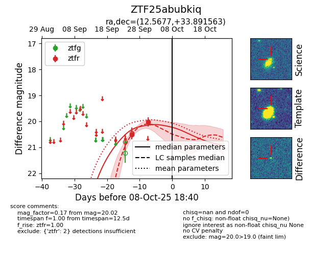
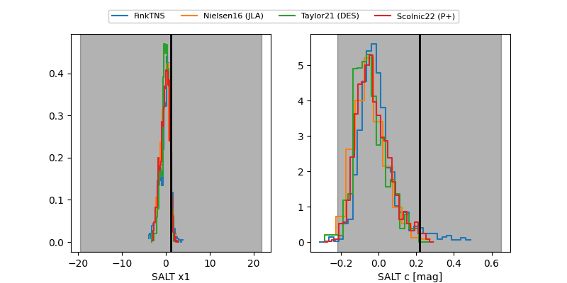

FINK: ZTF25abubkiq
Lasair: ZTF25abubkiq
ALeRCE: ZTF25abubkiq
ZTF25abubkiq (ztf,fink)
equatorial (ra, dec) = (12.5677,+33.89156)
galactic (l, b) = (122.6550,-28.97956)


last ztfr=20.02
2 ztfr detections